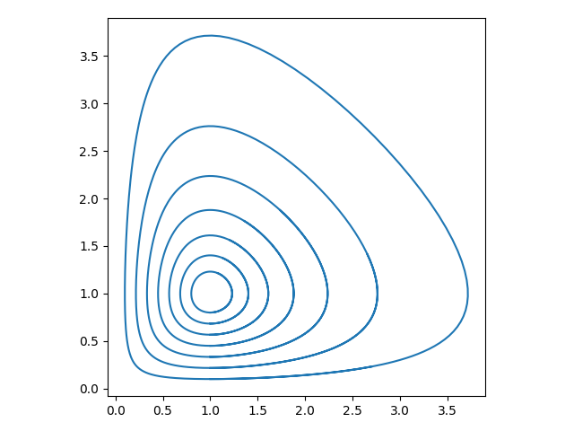
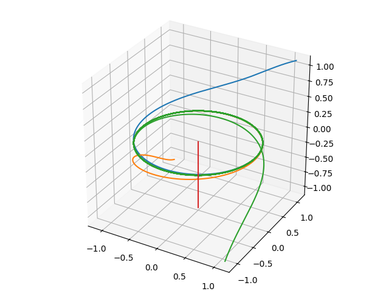
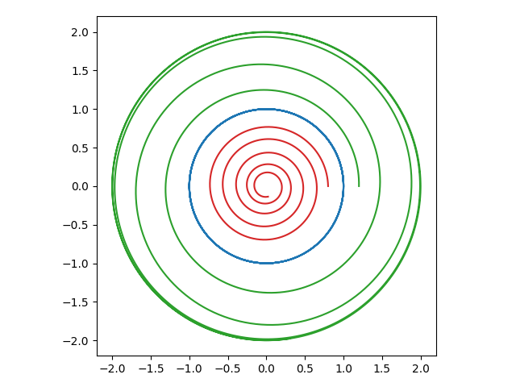

4. 解の大域的幾何構造
線形力学系の場合には, 平衡点が源点である場合は無限遠に発散するような軌道しか現れず, 鞍点である場合も初期値が安定部分空間上の点でないならば, 軌道は無限遠に発散する. 一方で, 非線形力学系では, 不安定な平衡点付近の点を初期値とする軌道が, (自分自身を含む) 平衡点に近づいたり, リミットサイクル に収束する, といったことが起こり得る. このような非線形力学系の複雑な挙動は, 解の大域的な構造に依るものであり, 平衡点の安定性に基づく局所的な解構造だけでは説明できないものである.
特に自励系が低次元の場合には (例えば $2$ 次元の場合, つまり 相平面 上では) 解の大域的な挙動を幾何学的に説明することができる. これまでも力学系の具体例としては $2$ 次元のものを主に考え, 主に線形力学系に対し相図や軌道の図示により解の挙動を説明してきたが, ここではそうしたアイデアをさらに発展させ, 相平面解析 に代表される非線形自励系の大域的な解構造を説明するための幾何学的解釈を紹介する.
4.1: 非線形力学系の解の挙動
ここでは, 非線形力学系に見られる複雑な解の挙動の具体例を見てみよう.
まず, 相平面上でのおおよその解の挙動を把握する際に有用なアイデアである ヌルクライン (nullcline) を紹介する.
自励系 $\mathbf{x}' = \mathbf{f}(\mathbf{x})$, つまり \[ \begin{pmatrix} x_1' \cr x_2' \cr \vdots \cr x_d' \end{pmatrix} = \begin{pmatrix} f_1(\mathbf{x}) \cr f_2(\mathbf{x}) \cr \vdots \cr f_d(\mathbf{x}) \end{pmatrix} \] を考える. このとき, $i=1, 2, \dots d$ に対して \[ \{\mathbf{x}\in\mathbb{R}^d : f_i(\mathbf{x}) = 0\} \] を $x_i$ のヌルクライン (nullcline) という.
- $x_i$ のヌルクライン上の点では, $x_i' = 0$ が成立する, つまり時間経過により $x_i$ 方向には動かない. 特にすべてのヌルクラインの交点は平衡点である.
- ベクトル場 $\mathbf{f}$ が連続ならば, ヌルクラインでのみ流れの "向き" が切り替わる可能性がある. つまり, 方向場の矢印の大雑把な "向き" ($2$ 次元の力学系なら右上, 右下, 左上, 左下) はヌルクラインで区切られた連結成分で共通であり, これを利用して相図の概形を描いたり平衡点の安定性の予想ができる.
- ヌルクラインは一般に $d$ 次元力学系に対して定義されるが, これに基づく解軌道の解釈を $3$ 次元以上の力学系に応用することは, あまり実用的では無いだろう (少なくともコンピュータの利用は必須だろう).
非線形連続力学系 \[ \begin{pmatrix} x' \cr y' \end{pmatrix} = \begin{pmatrix} 4y-x^2 \cr x-2 \end{pmatrix} \] を考える. いま, $x$ のヌルクライン $4y-x^2=0$ 上では $x'=0$ であるため, 方向場をプロットした際の矢印は $4y-x^2=0$ 上では真上か真下を向いている. より具体的には, $4y-x^2=0$ かつ $y' = x-2\lt0$ ならば真下を, $4y-x^2=0$ かつ $y' = x-2\gt0$ ならば真上を向いていることがわかる.
同様に, 方向場の矢印は $y$ のヌルクライン $x-2=0$ 上では水平方向を向いている. さらに $x' = 4y-x^2$ の符号を調べることにより右か左かがわかる.
このことに加えて, 右辺のベクトル場が連続であることに注意すると, ヌルクラインで区切られた連結成分では方向場の矢印の向きが反転することは無い. このことを利用すれば, ヌルクライン上の矢印の向きから, $\mathbb{R}^2$ 全体での方向場の概形を得ることができる. そして方向場の概形から相図の概形を予測することができるのである.
以下に, この例に対するヌルクライン, 方向場を掲載する. この図だけから (線形安定性解析をするまでも無く), 平衡点 $(x, y) = (2, 1)$ が鞍点であると推測することができる.

次に, 保存量 を持つ力学系の解の挙動について解説する.
$\mathbb{R}^d$ 上の自励系 $\mathbf{x}' = \mathbf{f}(\mathbf{x})$ に対し, 領域 $U\subset \mathbb{R}^d$ 上の非定数 $C^1$ 級関数 $H(\mathbf{x})$ で \[ \nabla H(\mathbf{x})\cdot\mathbf{f}(\mathbf{x}) = 0 \] を満たすものが存在するならば, この自励系を 保存系 (conservative system) と呼び, $H$ を 保存量 (conserved quantity) もしくは 第一積分 (first integral) という.
$H$ が保存系 $\mathbf{x}' = \mathbf{f}(\mathbf{x})$ の保存量ならば, その自励系の解 $\mathbf{x}(t)$ に対して \[ \dot{H}(\mathbf{x}) = \dfrac{d}{dt}H(\mathbf{x}(t)) = \nabla H(\mathbf{x}(t))\cdot\mathbf{x}'(t) = \nabla H(\mathbf{x}(t))\cdot\mathbf{f}(\mathbf{x}(t)) = 0 \] が成立する. つまり保存量を持つ自励系の解は, 時間経過により保存量を変化させないようにしか動かない. このことは, リアプノフ関数を持つ自励系の解が (局所的に) $\dot{V}(\mathbf{x}) \le 0$ を満たす, つまり解がリアプノフ関数の値を増加させないようにしか動かないことと対照的である.
ここでは ロトカ・ヴォルテラ方程式 (Lotka-Volterra equations) \[ \begin{pmatrix} x' \cr y' \end{pmatrix} = \begin{pmatrix} a (b-y)x \cr -c (d-x)y \end{pmatrix} \] を考える, ただし $a,b,c,d\gt 0$ はパラメータである. この方程式は, 生物の捕食者, 被捕食者それぞれの個体数 $x$, $y$ の変動を表す数理モデルとして用いられるものである. 実際, 例えばヌルクラインを描くと解軌道は座標軸を横切ることができないことがわかる. 従って, 初期値が領域 \[ D = \{(x, y)\in\mathbb{R}^2: x\gt 0,\ y\gt 0\}\subset \mathbb{R}^2 \] (つまり $xy$ 平面の第 $1$ 象限) に含まれているならば, 解の一意性より解の軌道は領域 $D$ に留まり続け, $D$ は不変集合である (特に個体数を表す $x(t)$ や $y(t)$ は負にならない) ことがわかる.
さらに, ロトカ・ヴォルテラ方程式は不変集合 $D$ 上で \[ H(\mathbf{x}) = c(x-d\log x) + a(y-b\log y) \] を保存量として持つことがわかる. 実際, \[ \nabla H(\mathbf{x})\cdot\mathbf{f}(\mathbf{x}) = \begin{pmatrix} c(x-d)/x \cr a(y- b)/y \end{pmatrix}\cdot\begin{pmatrix} -a(y - b)x \cr c(x - d)y \end{pmatrix} = 0 \] である. 従って, 与えられた初期値 $\mathbf{x}_0$ に対するロトカ・ヴォルテラ方程式の解は \[ H(\mathbf{x}) = H(\mathbf{x}_0) \] という $H$ の等高線上のみを動く. いくつかの初期値に対する数値計算の結果を以下に掲載する. 解の軌道は, 確かに $xy$ 平面の第 $1$ 象限に留まっており, また各初期値に応じた周期軌道を確認できる.

次に, $t\to\pm\infty$ としたときに自励系の解の挙動を説明する概念である 極限点 と 極限集合 を導入する. 例えば, 線形力学系であっても, 解が平衡点の周辺をぐるぐる回り続けるようなものが存在するが, 特に非線形力学系では, より複雑な "動き続ける" 解が存在することがある. 極限点および極限集合は, このような挙動を説明する際に有用な概念である.
力学系の相空間 $X$ およびフロー $\{\Phi_t\}_{t\in\mathbb{R}}$ を考える.
- ある点列 $\{t_n\}$ が存在し, \[ \left\{\begin{array}{l} \displaystyle\lim_{n\to\infty}t_n=\infty, \cr \displaystyle\lim_{n\to\infty}\Phi_{t_n}(\mathbf{x}_0) = \mathbf{y} \quad\text{in } X \end{array}\right. \] が成立するとき, $\mathbf{y}\in X$ は $\mathbf{x}_0\in X$ の $\omega$ 極限点 ($\omega$-limit point) であるという.
- 点 $\mathbf{x}_0\in X$ の全ての $\omega$ 極限点からなる集合を $\omega$ 極限集合 ($\omega$-limit set) といい, $\omega(\mathbf{x}_0)$ と表記する, つまり \[ \omega(\mathbf{x}_0) = \{\mathbf{y}\in X : t_n\to \infty \text{ および } \lim_{n\to\infty}\Phi_{t_n}(\mathbf{x}_0)=\mathbf{y} \text{ を満たす点列 $\{t_n\}$ が存在する}\}. \]
- ある点列 $\{t_n\}$ が存在し, \[ \left\{\begin{array}{l} \displaystyle\lim_{n\to\infty}t_n=-\infty, \cr \displaystyle\lim_{n\to\infty}\Phi_{t_n}(\mathbf{x}_0) = \mathbf{y} \quad\text{in } X \end{array}\right. \] が成立するとき, $\mathbf{y}\in X$ は $\mathbf{x}_0\in X$ の $\alpha$ 極限点 ($\alpha$-limit point) であるという.
- 点 $\mathbf{x}_0\in X$ の全ての $\alpha$ 極限点からなる集合を $\alpha$ 極限集合 ($\alpha$-limit set) といい, $\alpha(\mathbf{x}_0)$ と表記する, つまり \[ \alpha(\mathbf{x}_0) = \{\mathbf{y}\in X : t_n\to -\infty \text{ および } \lim_{n\to\infty}\Phi_{t_n}(\mathbf{x}_0)=\mathbf{y} \text{ を満たす点列 $\{t_n\}$ が存在する}\}. \]
なお, 極限集合内の点を初期値とする軌道は極限集合内に留まる, つまり極限集合は不変集合である.
線形力学系 \[ \mathbf{x}' = \begin{pmatrix} -1 & 0 \cr 0 & -2 \end{pmatrix}\mathbf{x} \] の平衡点 $\mathbf{0}$ は漸近安定である. つまり全ての点は時間経過により ($t_n\to\infty$ となる任意の点列 $\{t_n\}$ に対して) $\mathbf{0}$ に収束する. 従って任意の $\mathbf{x}_0$ に対し \[ \omega(\mathbf{x}_0) = \{\mathbf{0}\} \] である. 一方で, $\mathbf{0}$ 以外の全ての点は時間に逆行したとき ($t_n\to-\infty$ となる任意の点列 $\{t_n\}$ に対して) 発散するため, \[ \alpha(\mathbf{0}) = \{\mathbf{0}\},\qquad \alpha(\mathbf{x}_0) = \emptyset \quad \text{for all}\quad \mathbf{x}_0\neq\mathbf{0} \] である.
例として ファン・デル・ポール振動子 (van der Pol oscillator) \[ x'' - \mu(1-x^2)x' + x = 0 \] を考えよう, ただし $\mu\gt0$ はパラメータである. いま, $y=x'$ を導入して上の式を常微分方程式系に書き換えると \[ \begin{pmatrix} x' \cr y' \end{pmatrix} = \begin{pmatrix} y \cr \mu(1-x^2)y - x \end{pmatrix} \] という自励系が得られる. これについて, $\mu = 1.0$ のとき初期値 $(0.1, 0.1)$ に対する軌道と初期値 $(3.1, 3.1)$ に対する軌道を以下に掲載する:

これらの計算結果から, 異なる初期値に対するこの自励系の $\omega$ 極限集合は同一の周期軌道になることが示唆される. なお, このことをきちんと確認するためには, 後に述べるポアンカレ・ベンディクソンの定理を利用することになる.
次に, 安定多様体と不安定多様体により説明される解の挙動の中でも特徴的なものを解説する.
自励系 $\mathbf{x}' = \mathbf{f}(\mathbf{x})$ の平衡点 (鞍点) $\mathbf{x}_*$ に対して, \[ \lim_{t\to-\infty}\mathbf{x}(t) = \lim_{t\to\infty}\mathbf{x}(t) = \mathbf{x}_* \] を満たす解 $\mathbf{x}(t)$ の軌道が存在するならば, それを ホモクリニック軌道 (homoclinic orbit) という.
ホモクリニック軌道は, 安定多様体 $W^s(\mathbf{x}_*)$ と不安定多様体 $W^u(\mathbf{x}_*)$ を用いて \[ W^s(\mathbf{x}_*) \cap W^u(\mathbf{x}_*) \] に含まれる軌道であると説明される. また, $\mathbf{x}_*$ に対するホモクリニック軌道上の点 $\mathbf{x}$ に対して \[ \alpha(\mathbf{x}) = \omega(\mathbf{x}) = \{\mathbf{x_*}\} \] である.
例として ダフィング方程式 (Duffing equation) \[ x'' - x + x^3 = 0 \] を考える. ここで $y=x'$ を導入することで自励系 \[ \begin{pmatrix} x' \cr y' \end{pmatrix} = \begin{pmatrix} y \cr x - x^3 \end{pmatrix} \] が得られる. 平衡点は $\mathbf{x}_{*1} = \mathbf{0}$, $\mathbf{x}_{*2} = (-1,0)$, $\mathbf{x}_{*3} = (1,0)$ の $3$ 点であり, 線形安定性解析より平衡点 $\mathbf{x}_{*1} = \mathbf{0}$ は鞍点であることがわかる.
ところで, ダフィング方程式から導出した自励系は \[ H(\mathbf{x}) = \dfrac{x^4}{4} - \dfrac{x^2}{2} + \dfrac{y^2}{2} \] を保存量に持つ. 従って, この問題の解は $H$ の等高線上を動くことになる. 以下に関数 $H$ のグラフおよび $H(\mathbf{x})$ の値が $0$ となる等高線をプロットした図を示す. この等高線上にある平衡点は鞍点 $\mathbf{x}_{*1} = \mathbf{0}$ のみであり, $\mathbf{0}$ に近づく軌道と離れる軌道の両方が存在するが, それは $\mathbf{x}_{*1}$ を通る $H$ の等高線しか存在し得ない. 従って図中の黒い線は $\mathbf{x}_{*1} = \mathbf{0}$ に対する安定多様体 $W^s(\mathbf{0})$ であり, 同時に不安定多様体 $W^u(\mathbf{0})$ でもある. つまり平衡点左右の各黒い線がそれぞれホモクリニック軌道を表している.

ホモクリニック軌道は不安定平衡点から出発した点が同じ点に収束する軌道であり, その存在は直感的には奇妙なことに思える. 実際, このような軌道は安定多様体と不安定多様体が "ぴったり重なって" (平衡点以外に) 共通部分を持つ場合のみ存在する.
例えば, 上の式に少しの摂動を加えるとホモクリニック軌道も存在しなくなる. これに関連して, ダフィング方程式に周期外力を加えた \[ \begin{pmatrix} x' \cr y' \end{pmatrix} = \begin{pmatrix} y \cr x - x^3 + 0.01 \cos(t) \end{pmatrix} \] の解の挙動について考えてみよう. この力学系 (自励系では無いことに注意) では, もともと一致していた安定多様体と不安定多様体が周期外力の摂動によって分離する. 実際に数値計算を行うと, 以下に示すように複雑な挙動を観察することができる.
自励系 $\mathbf{x}' = \mathbf{f}(\mathbf{x})$ の異なる $2$ つの平衡点 $\mathbf{x}_{*1}$, $\mathbf{x}_{*2}$ に対して, \[ \lim_{t\to-\infty}\mathbf{x}(t) = \mathbf{x}_{*1},\quad \lim_{t\to\infty}\mathbf{x}(t) = \mathbf{x}_{*2} \] を満たす解 $\mathbf{x}$ の軌道が存在するならば, それを ヘテロクリニック軌道 (heteroclinic orbit) という.
ヘテロクリニック軌道は, 安定多様体 $W^s(\mathbf{x}_{*2})$ と不安定多様体 $W^u(\mathbf{x}_{*1})$ を用いて \[ W^u(\mathbf{x}_{*1}) \cap W^s(\mathbf{x}_{*2}) \] に含まれる軌道であると説明される. また, ヘテロクリニック軌道に含まれる点 $\mathbf{x}$ に対し, \[ \alpha(\mathbf{x}) = \mathbf{x}_{*1},\quad \omega(\mathbf{x}) = \{\mathbf{x}_{*2}\} \] である.
例として \[ \begin{pmatrix} x' \cr y' \cr z' \end{pmatrix} = \begin{pmatrix} x(1-x-ay) \cr y(1-y-az) \cr z(1-z-ax) \end{pmatrix}\quad (a\gt 0) \] を考えてみよう. なお, これは先に挙げたロトカ・ヴォルテラ方程式の $3$ 次元への拡張であるとみなせるものである.
まず, \[ \mathbf{x}_{*0} = \begin{pmatrix} 0 \cr 0 \cr 0 \end{pmatrix},\quad \mathbf{x}_{*1} = \begin{pmatrix} 1 \cr 0 \cr 0 \end{pmatrix},\quad \mathbf{x}_{*2} = \begin{pmatrix} 0 \cr 1 \cr 0 \end{pmatrix},\quad \mathbf{x}_{*3} = \begin{pmatrix} 0 \cr 0 \cr 1 \end{pmatrix},\quad \mathbf{x}_{*4} = \begin{pmatrix} \dfrac{1}{1+a} \cr \dfrac{1}{1+a} \cr \dfrac{1}{1+a} \end{pmatrix} \] が平衡点であることが確認できる. また, \[ x=0,\quad y=0,\quad z=0 \] で表される平面は全て不変集合であり, 実は平衡点 $\mathbf{x}_{*1}$ から $\mathbf{x}_{*2}$ へのヘテロクリニック軌道が存在し, また同様に $\mathbf{x}_{*2}$ から $\mathbf{x}_{*3}$, さらに $\mathbf{x}_{*3}$ から $\mathbf{x}_{*1}$ へのヘテロクリニック軌道が存在する. つまりヘテロクリニック軌道によるループが存在することになるが, これを ヘテロクリニックサイクル (heteroclinic cycle) と呼ぶことがある. 特に $a\gt 2$ の場合は, このヘテロクリニックサイクルが周辺の解軌道に強く影響する. 数値計算では, ヘテロクリニックサイクルの近くを通りながら動き続ける軌道を見つけることができる (下図).
4.2: リミットサイクル
非線形連続力学系の解でも, ロトカ・ヴォルテラ方程式の解は初期値に応じた周期軌道を描き, 一方でファン・デル・ポール振動子の解はある周期軌道に収束するような軌道を描く. 後者のような周期軌道は特に リミットサイクル と呼ばれるものであり, これも非線形力学系の解の挙動を表す重要な概念である. ここでは, リミットサイクルと関連するアイデアについて紹介しよう.
連続力学系の周期軌道 $\Gamma = \{\Phi_t(\mathbf{x}_0)\}_{t\in\mathbb{R}}\subset X$ が孤立している (すぐ近くに他の周期軌道が存在しない) とき, $\Gamma$ を リミットサイクル (limit cycle) という.
- $\Gamma$ に十分近い任意の $\mathbf{x}_1\not\in \Gamma$ に対して \[ \omega(\mathbf{x}_1) = \Gamma \] が成立するとき, $\Gamma$ は 漸近安定なリミットサイクル (もしくは単に安定なリミットサイクル) であるという.
- $\Gamma$ に十分近い任意の $\mathbf{x}_1\not\in \Gamma$ に対して \[ \alpha(\mathbf{x}_1) = \Gamma \] が成立するとき, $\Gamma$ は 不安定なリミットサイクル であるという.
平衡点と同様に, ある方向からは近づくが反対側からは離れていくような挙動をするリミットサイクルも存在する. そのようなリミットサイクルはやはり 半安定 であるということがある.
周辺の軌道を引き寄せる効果を持つ $\omega$ 極限集合は安定なリミットサイクルに限らない (例えば漸近安定な平衡点や, 高次元の場合はより複雑な幾何構造のものもある). このような性質を持つ $\omega$ 極限集合を総称して アトラクター という. 以下に定義という形で述べるが, 実際にはには文献によっていくつかの定義が用いられる.
相空間 $X$ は距離空間であるとする. 相空間 $X$ 上のフロー $\{\Phi_t\}_{t\in\mathbb{R}}$ が定める力学系のコンパクトな不変集合 $A$ が, ある近傍 $U$ の全ての点 $\mathbf{x}\in U$ に対し, \[ \lim_{t\to\infty}\operatorname{dist}(\Phi_t(\mathbf{x}), A) = 0 \] を満たすとき, $A$ を アトラクター (attractor) もしくは 吸引集合 といい, \[ B(A) = \{\mathbf{x}\in X: \lim_{t\to\infty}\operatorname{dist}(\Phi_t(\mathbf{x}), A)=0\} \] を $A$ の 吸引領域 (region of attraction) もしくは ベイスン (basin) という.
例として \[ \begin{pmatrix} x' \cr y' \cr z' \end{pmatrix} = \begin{pmatrix} x(1-x^2-y^2)-y \cr y(1-x^2-y^2)+x \cr -z \end{pmatrix} \] を考える. この問題については, 円柱座標系 \[ x = r\cos\theta,\quad y = r\sin\theta \] により座標変換すると \[ \begin{pmatrix} r' \cr \theta' \cr z' \end{pmatrix} = \begin{pmatrix} r(1-r^2) \cr 1 \cr -z \end{pmatrix} \] となるため, $r\neq 0$ ならば解は $xy$ 平面上の半径 $1$ の円に近づき回り続けることがわかる. つまり周期軌道 \[ \Gamma = \{(x, y, z)\in\mathbb{R}^3 : x^2+y^2=1,\quad z=0\} \] はアトラクターであり, また安定なリミットサイクルである. さらに, このアトラクターのベイスンは \[ B(\Gamma) = \{(x, y, z)\in\mathbb{R}^3 : x^2+y^2\gt 0\} \] である.
いくつかの初期値に対する数値計算例を以下に示す:

さて, 上では数値計算結果からリミットサイクルの存在を推測できると言及したが, 与えられた自励系のリミットサイクルの存在を数学的に証明することは一般にはそれほど容易ではない. とはいえ, 二次元の自励系に限れば実は以下の定理が成立することが知られている:
二次元自励系 $\mathbf{x}' = \mathbf{f}(\mathbf{x})$ について, ベクトル場 $\mathbf{f}$ は $C^1$ 級であるとする. また, 初期値 $\mathbf{x}_0$ に対する解 $\mathbf{x}(t)$ について, 正の半軌道 \[ \{\mathbf{x}(t)\in\mathbb{R}^2 : t\ge 0\} \] は有界であるとする. このとき, $\omega(\mathbf{x}_0)$ が平衡点を含まないならば, $\omega(\mathbf{x}_0)$ は周期軌道である.
大雑把に言えば, $C^1$ ベクトル場 $\mathbf{f}$ に対する 二次元自励系 $\mathbf{x}' = \mathbf{f}(\mathbf{x})$ の解の挙動は,
- 発散する,
- 平衡点に収束する (漸近安定な平衡点に収束する, 安定多様体上の初期値が鞍点に収束するなど),
- ホモクリニック軌道やヘテロクリニック軌道など, 平衡点とそれらを結ぶ軌道などに近づく,
- 安定なリミットサイクルに近づく, もしくは初期値に応じた周期軌道を動く
のいずれかに限られ, 例えばカオス的な挙動は現れない (周期外力を加えたダフィング方程式は 非自励系 であったことに注意).
ポアンカレ・ベンディクソンの定理の詳細な証明はここでは説明しないが, この定理が二次元に限られるのは平面特有の性質, 特に ジョルダンの閉曲線定理 を用いるためである:
$\mathbb{R}^2$ 上の自己交差を持たない閉曲線 (ジョルダン曲線) は, $\mathbb{R}^2$ を曲線内部と外部に二分する.
この定理の主張は直感的には明らかに思えるが, 証明は非常に複雑なのでここでは言及しない. ともかく, ポアンカレ・ベンディクソンの定理は $\mathbb{R}^2$ 上の自励系にしか適用できないものであることに注意してほしい.
また, ポアンカレ・ベンディクソンの定理の証明に際して用いられる ポアンカレ写像 は (二次元自励系に限らず利用される) 重要なアイデアであり, 簡単に言及しておく:
$n$ 次元自励系 $\mathbf{x}' = \mathbf{f}(\mathbf{x})$ のフローを $\{\Phi_t\}_{t\in\mathbb{R}}$ と表記する.
- $n-1$ 次元超局面 $\Sigma$ が, $\Sigma$ 上の全ての点でベクトル場 $\mathbf{f}$ に接しないとき (つまり $\Sigma$ が $\mathbf{f}$ に対し横断的であるとき), $\Sigma$ を ポアンカレ断面 (Poincaré section) という.
- $\mathbf{x}\in\Sigma$ であって, $\mathbf{x}$ からの軌道が再び $\Sigma$ に戻るような点 $\mathbf{x}$ に対し \[ \tau(\mathbf{x}) = \inf\{t\gt 0 : \Phi_t(\mathbf{x})\in \Sigma\} \] とおく. このとき, \[ P(\mathbf{x}) = \Phi_{\tau(\mathbf{x})}\mathbf{x} \] を ポアンカレ写像 (Poincaré map) という.
二次元自励系を例に, ポアンカレ写像のアイデアを説明しよう. ベクトル場 $\mathbf{f}$ と交差する曲線 $\Sigma$ を適当に取り, $\mathbf{x}\in \Sigma$ を適当に取る. このとき, $\mathbf{x}\in\Sigma$ を通る軌道が再び $\Sigma$ と交わるとき, その交点が $P(\mathbf{x})$ である.
一般にはポアンカレ写像が存在するとは限らないが, ポアンカレ・ベンディクソンの定理の仮定の下では存在することが示され, これを用いると $\Sigma\cap\omega(\mathbf{x})$ 上の点に収束する $\Sigma$ 上の点列 \[ \mathbf{x}_0, \qquad \mathbf{x}_1 = P(\mathbf{x}_0), \qquad \mathbf{x}_2 = P(\mathbf{x}_1) = P^2(\mathbf{x}_0), \dots \] を構成することができ, これを定理の証明に用いることができる. 具体的には, 二次元連続力学系に対するポアンカレ断面は一次元になることから, ポアンカレ写像 $P$ により構成される離散力学系は一次元であり, その平衡点 $x_*$ は \[ |P(x_*)| \lt 1 \] ならば離散力学系の平衡点は漸近安定であると判定できるが, これは元の連続力学系が安定なリミットサイクルを持つことを意味している.
下図はパラメータ $\mu=0.5$ を用いたファン・デル・ポール振動子に対するポアンカレ断面の例 (オレンジ色) と, その際のポアンカレ写像の様子を表したものである. 右側は左の図中の四角で囲った部分の拡大を表している.

上で例として挙げた \[ \begin{pmatrix} x' \cr y' \cr z' \end{pmatrix} = \begin{pmatrix} x(1-x^2-y^2)-y \cr y(1-x^2-y^2)+x \cr -z \end{pmatrix} \] の周期軌道 \[ \Gamma = \{(x, y, z)\in\mathbb{R}^3 : x^2+y^2=1,\quad z=0\} \] についてもう一度考えてみよう. 例えば \[ \Sigma = \{(x, 0, z)\in\mathbb{R}^3 : x\gt 0\} \] をポアンカレ断面としてみると, ポアンカレ写像 $P$ は二次元離散力学系を導出することとなり, $\Gamma$ と $\Sigma$ の交点はその離散力学系の平衡点である. そこで, この平衡点が漸近安定であることを示せば, 対応する周期軌道 $\Gamma$ が安定なリミットサイクルの存在を証明したことになる.
ここでは, ポアンカレ写像 $P$ が定める離散力学系に対して 線形安定性解析 を試みる: つまりヤコビ行列 $DP$ の平衡点における固有値を調べればよい. まず, 円柱座標系に座標変換すると \[ \begin{pmatrix} r' \cr \theta' \cr z' \end{pmatrix} = \begin{pmatrix} r(1-r^2) \cr 1 \cr -z \end{pmatrix} \] であったことを思い出すと, $\theta' = 1$ より初期値 $\mathbf{x}_0\in\Sigma$ の軌道は周期 $2\pi$ ごとにポアンカレ断面に戻ってくることになり, また不動点が \[ \begin{pmatrix} 1 \cr 0 \end{pmatrix} \] であることがわかる. ここで座標変換 $\rho = r-1$ を導入すると, ポアンカレ写像が定める離散力学系の平衡点 \[ \mathbf{p}_* = \begin{pmatrix} \rho_* \cr z_* \end{pmatrix} = \mathbf{0} \]の近くでは \[ \rho'(t) = (\rho+1)(1-(\rho+1)^2) \approx -2\rho, \qquad z'(t) = -z, \] つまり \[ \rho(t) \approx e^{-2t}\rho(0),\qquad z(t) = e^{-t}z(0) \] であり, これを用いると \[ P(\mathbf{p}) = \begin{pmatrix} \rho(t+2\pi) \cr z(t+2\pi) \end{pmatrix} \approx \begin{pmatrix} e^{-4\pi}\rho(t) \cr e^{-2\pi}z(t) \end{pmatrix} \] である. 以上より, \[ DP(\mathbf{p}_*) = \begin{pmatrix} e^{-4\pi} & 0 \cr 0 & e^{-2\pi} \end{pmatrix} \] が得られ, その固有値 $\lambda_1 = e^{-4\pi}$, $\lambda_2 = e^{-2\pi}$ はどちらも $|\lambda_i|\lt 1$ を満たすことから, $\mathbf{p}_*$ は漸近安定な平衡点である. このように, ポアンカレ写像を直接求めるのではなく, 離散力学系の平衡点付近での線形化問題さえ考えれば良い. これは, 平衡点近傍でのポアンカレ写像の一次近似 $DP(\mathbf p_*)$ は, 周期軌道からの微小なずれが一周期の間にどの程度増幅, 減衰するかによって調べられることを意味している.
一般の周期軌道については, その軌道に沿った線形化方程式（変分方程式）を一周期だけ解くことで, ポアンカレ写像の固定点における固有値に対応する量を求めることができる. これを体系化するのが フロケ理論 である. この資料では言及しないが, 興味があれば調べてみると良い.
さて, ここまでの数値計算では安定なリミットサイクルを例としたため, 適当な初期値から長時間の数値計算を実行することで周期軌道を見つけることができていた. 一方で, このアイデアでは一般の初期値を不安定なリミットサイクルに収束させて見つけることができない. ここでは不安定な周期軌道も見つけることができる数値計算手法として 狙い撃ち法 (もしくは シューティング法, shooting method) を紹介しよう.
$\mathbb{R}^d$ 上の連続力学系 $\mathbf{x}' = \mathbf{f}(\mathbf{x})$ を与えるフロー $\{\Phi_t\}_{t\in\mathbb{R}}$ を考える. このとき, この連続力学系の周期軌道を見つけるという問題は, 時刻 $t=T$ における 終端条件 \[ \Phi_T(\mathbf{x}_0) = \mathbf{x}_0 \] が満たされるように (終端条件を狙い撃ちするように) 初期条件 $\mathbf{x}_0$ を調整する, という問題に帰着される. このように, 所望の終端条件を満たす初期条件などを, \[ \Phi_T(\mathbf{x}_0) - \mathbf{x}_0 = \mathbf{0} \] の数値解として求める手法を狙い撃ち法と総称する.
ただし, 今回は初期値 $\mathbf{x}_0\in\mathbb{R}^d$ だけでなく時刻 $T$ も求める必要がある. 一方, $\Phi_T(\mathbf{x}_0) - \mathbf{x}_0 = \mathbf{0}$ という式は $d$ 個の方程式の連立を意味しており, 未知数 $(\mathbf{x}_0, T)\in\mathbb{R}^{d+1}$ を見つけるためには方程式が一つ足りていない. そこで, $\mathbf{x}_0$ が存在し得る超曲面を指定する式 \[ g(\mathbf{x}_0) = 0 \] を併せて解くことにしよう (この条件は 位相条件 と呼ばれることがある, ポアンカレ断面の指定に相当するアイデアである). つまり, \[ F(\mathbf{x}_0, T) = \begin{pmatrix} \Phi_T(\mathbf{x}_0) - \mathbf{x}_0 \cr g(\mathbf{x}_0) \end{pmatrix} = \mathbf{0} \] を満たす $(\mathbf{x}_0, T)$ を求めれば良いが, ここではニュートン法による反復計算を考えてみる: \[ \begin{pmatrix} \mathbf{x}_0^{(k+1)} \cr T^{(k+1)} \end{pmatrix} = \begin{pmatrix} \mathbf{x}_0^{(k)} \cr T^{(k)} \end{pmatrix} - DF(\mathbf{x}_0^{(k)}, T^{(k)})^{-1}F(\mathbf{x}_0^{(k)}, T^{(k)}) \] いま, ヤコビ行列 $DF(\mathbf{x}_0, T)$ は ($\mathbf{x}_0$ に関するヤコビ行列を与える $D_{\mathbf{x}_0}$ を用いて) \[ DF(\mathbf{x}_0, T) = \begin{pmatrix} D_{\mathbf{x}_0}\Phi_T(\mathbf{x}_0) - I & \dfrac{\partial}{\partial T}\Phi_T(\mathbf{x}_0) \cr D_{\mathbf{x}_0}g(\mathbf{x}_0) & 0 \end{pmatrix} \] というブロック行列となる. いま, \[ \dfrac{\partial}{\partial t}\Phi_t(\mathbf{x}_0) = \mathbf{x}'(t) = \mathbf{f}(\mathbf{x}(t)),\qquad D_{\mathbf{x}_0}g(\mathbf{x}_0) = \nabla g(\mathbf{x}_0)^{\operatorname{T}} \] であることは良い. また, $M(t) = D_{\mathbf{x}_0}\Phi_t(\mathbf{x}_0)$ とおくと, $M(0) = I$ および \[ M' = \dfrac{\partial}{\partial t}D_{\mathbf{x}_0}\Phi_t(\mathbf{x}_0) = D_{\mathbf{x}_0}\mathbf{x}'(t) = D\mathbf{f}(\mathbf{x}(t))D_{\mathbf{x}_0}\mathbf{x}(t) = D\mathbf{f}(\mathbf{x}(t))M \] が得られる. これに対する数値計算により $M(T)$ が得られれば, \[ DF(\mathbf{x}_0, T)^{-1} = \begin{pmatrix} M(T) - I & \mathbf{f}(\mathbf{x}(T)) \cr \nabla g(\mathbf{x}_0)^{\operatorname{T}} & 0 \end{pmatrix}^{-1} \] を計算することでニュートン法の反復計算が実行可能である.
具体例として, $a\gt 0$ に対し \[ \begin{pmatrix} x' \cr y' \end{pmatrix} = \begin{pmatrix} -y + ax(x^2+y^2-1)(4-x^2-y^2) \cr x + ay(x^2+y^2-1)(4-x^2-y^2) \end{pmatrix} \] を考えてみよう. 数値計算の前に厳密解の挙動について考えてみる. 上を円柱座標系に座標変換すると \[ \left\{\begin{array}{rl} r' &= ar(r^2-1)(4-r^2) \cr \theta' &= 1 \end{array}\right. \] となることから, $r=1$, $r=2$ は周期 $2\pi$ の周期軌道であり, $r=1$ は不安定なリミットサイクル, $r=2$ は安定なリミットサイクルである. また, $r=0$ (つまり原点) は漸近安定な平衡点である.
実際の数値計算の結果を以下に掲載する. 赤と緑の線は初期値を適当に設定したものであり, 原点と $r=2$ で表されるリミットサイクルにそれぞれ収束している様子を確認できる. 一方で, 青い線は狙い撃ち法に基づき計算した初期値に対する計算結果であり, 不安定な周期軌道を捉えることができている.

それでは, 上の問題に対する狙い撃ち法に基づく数値計算を考えてみよう. ここでは位相条件 $g(\mathbf{x}_0) = 0$ を与える関数 $g$ として \[ g(x_0, y_0) = y_0 \] を用いることにする. また, 数値計算の際には $x_0\gt 0$ と設定することにすれば, これは初期値が \[ \Sigma = \{(x, y)\in\mathbb{R}^2: x\gt 0,\ y=0\} \] というポアンカレ断面上にあると仮定していることに相当する. 次に, 記号の簡単のために $s=x^2+y^2$ とおくと \[ \mathbf{f}(\mathbf{x}) = \begin{pmatrix} -y + ax(s-1)(4-s) \cr x + ay(s-1)(4-s) \end{pmatrix} \] より \[ D\mathbf{f}(\mathbf{x}) = \begin{pmatrix} a(s-1)(4-s) + 2ax^2(5-2s) & -1 + 2axy(5-2s) \cr 1+2axy(5-2s) & a(s-1)(4-s) + 2ay^2(5-s2) \end{pmatrix} \] である. あとは狙い撃ち法に基づき, 適当に定めた $\mathbf{x}_0^{(0)}$ および $T^{(0)}$ に対し, 例えば
- 与えられた $\mathbf{x}_0^{(k)}$, $T^{(k)}$ に対し, $\mathbf{x}' = \mathbf{f}(\mathbf{x})$ と $M' = D\mathbf{f}(\mathbf{x})M$ をルンゲ=クッタ法で計算して $\mathbf{x}(T^{(k)})$, $M(T^{(k)})$ をそれぞれ求める: 時間ステップ数 $N$ に対し,
\[
\tau = \dfrac{T^{(k)}}{N},\quad t_n = n\tau, \quad \mathbf{x}_n \approx \mathbf{x}(t_n),\quad M_n \approx M(t_n)
\] に基づき
- $\mathbf{k}_1 = \mathbf{f}(\mathbf{x}_n), \quad K_1 = D\mathbf{f}(\mathbf{x}_n)M_n$,
- $\mathbf{k}_2 = \mathbf{f}\left(\mathbf{x}_n + \dfrac{\tau}{2}\mathbf{k}_1\right), \quad K_2 = D\mathbf{f}\left(\mathbf{x}_n + \dfrac{\tau}{2}\mathbf{k}_1\right)\left(M_n + \dfrac{\tau}{2}K_1\right)$,
- $\mathbf{k}_3 = \mathbf{f}\left(\mathbf{x}_n + \dfrac{\tau}{2}\mathbf{k}_2\right), \quad K_3 = D\mathbf{f}\left(\mathbf{x}_n + \dfrac{\tau}{2}\mathbf{k}_2\right)\left(M_n + \dfrac{\tau}{2}K_2\right)$,
- $\mathbf{k}_4 = \mathbf{f}(\mathbf{x}_n + \tau\mathbf{k}_3), \quad K_4 = D\mathbf{f}(\mathbf{x}_n + \tau\mathbf{k}_3)(M_n + \tau K_3)$,
- $\mathbf{x}_{n+1} = \mathbf{x}_n + \dfrac{\tau}{6}(\mathbf{k}_1 + 2\mathbf{k}_2 + 2\mathbf{k}_3 + \mathbf{k}_4), \quad M_{n+1} = M_n + \dfrac{\tau}{6}(K_1 + 2K_2 + 2K_3 + K_4)$
- ヤコビ行列 \[ DF(\mathbf{x}_0^{(k)}, T^{(k)}) = \begin{pmatrix} M(T^{(k)}) - I & \mathbf{f}(\mathbf{x}(T^{(k)})) \cr \nabla g(\mathbf{x}_0^{(k)})^{\operatorname{T}} & 0 \end{pmatrix} \] を求める.
- ニュートン法による更新 \[ \begin{pmatrix} \mathbf{x}_0^{(k+1)} \cr T^{(k+1)} \end{pmatrix} = DF(\mathbf{x}_0^{(k)}, T^{(k)})^{-1}\begin{pmatrix} \mathbf{x}_0^{(k)} \cr T^{(k)} \end{pmatrix} \] を計算する
という手順で反復計算し, 適当に打ち切ることで不安定な周期軌道を与える $\mathbf{x}_0$, $T$ が得られると期待される.
4.3: 勾配系とハミルトン系
3.2: リアプノフの安定性定理 において言及した勾配系 \[ \mathbf{x}' = -\nabla E(\mathbf{x}) \] は, エネルギー $E: \mathbb{R}^d\to\mathbb{R}$ の最急降下方向に解が動くと説明することができるものであった. また, 保存系は保存量を一定に保つように解が動く. そのため, これらの力学系は (相空間の次元が小さいならば) エネルギーや保存量を表す関数のプロットから解の挙動を推測することができる. ここでは, このアイデアについて簡単に紹介し, また保存系の一例として ハミルトン系 についても言及する.
まずは勾配系の定義を改めて述べる:
$C^1$ 級関数 $E: \mathbb{R}^d\to\mathbb{R}$ に対して, \[ \mathbf{x}' = -\nabla E(\mathbf{x}) \] という力学系を 勾配系 (gradient system) もしくは 勾配流 (gradient flow) という. このとき, $E$ を エネルギー もしくは ポテンシャル と呼ぶ.
- 力学系 $\mathbf{x}' = -\nabla E(\mathbf{x})$ の平衡点は $\nabla E(\mathbf{x})=0$ を満たす点, すなわちエネルギーの勾配を $0$ にする点 (停留点) である.
- 直感的には, 勾配系の解は "エネルギーの坂を転げ落ちる" ように動く.
- 以上より, エネルギー関数の形状から平衡点の安定性を判断できる場合がある.
例としてロジスティック方程式 \[ x' = f(x) = ax(1-x) \] を考える, ただし $a\gt 0$ とする. 平衡点は $x=0, 1$ であり, その符号を考えることで, 下図のように安定性を判断できる.

ところで, $E(x) = a(x^3/3 - x^2/2)$ とおくと, ロジスティック方程式は \[ x' = -\dfrac{dE}{dx}(x) \] という勾配系であると解釈できる. 従って, 関数 $E(x)$ の停留点が平衡点であり, グラフの形状からその安定性を判定することができる (下図).

エネルギー $E(x, y) = x^2-y^2$ に対する勾配系 \[ \begin{pmatrix} x' \cr y' \end{pmatrix} = -\nabla E(\mathbf{x}) = -\begin{pmatrix} \partial E/\partial x \cr \partial E/\partial y \end{pmatrix} = \begin{pmatrix} -2x \cr 2y \end{pmatrix} \] の平衡点 $(0, 0)$ は鞍点である. 実際, エネルギーのグラフをプロットすると下図のようになり, $(0,0)$ が沈点でも源点でもないことを確認できる. なお, 多変数関数に対するこのような点 (ある方向に極大, ある方向に極小を達成する点) は, グラフが馬の鞍のような形をしていることから鞍点と呼ばれる. 力学系においては収束する軌道と離れる軌道の両方を持つ平衡点を鞍点と呼ぶが, これは勾配系のエネルギーが鞍点である場合と同様の性質を持つことに基づく.

鞍点を持つエネルギーに対する勾配系の解の様子を観察してみよう. ここでは, エネルギーとして \[ E(x, y) = \dfrac{1}{4}((x^2-1)^2 + (y^2-1)^2 + (x-y)^2) \] に対する勾配系 \[ \begin{pmatrix} x' \cr y' \end{pmatrix} = -\nabla E(\mathbf{x}) = -\begin{pmatrix} \partial E/\partial x \cr \partial E/\partial y \end{pmatrix} = \begin{pmatrix} -x^3 + (x+y)/2 \cr -y^3 + (x+y)/2 \end{pmatrix} \] を考える. このエネルギーは $E(x, y)\ge0$ を満たし, また $E(1, 1) = E(-1, -1) = 0$ を満たすことから, この $2$ 点が漸近安定な平衡点である. また, $(0, 0)$ が平衡点であることも簡単にわかるが, エネルギー $E$ のグラフの形状から $(0, 0)$ は鞍点である. 実際に, エネルギー $E$ のグラフと適当な初期値に対する勾配系の解の軌道をプロットしたものは以下のようになる. この解の軌道は鞍点の近くを通る (そうなるように初期値を設定している) が, 鞍点付近では一時的に動きがゆっくりになり, その後でエネルギーの極小値である漸近安定な平衡点に向かって動く様子を確認できる.
次に ハミルトン系 について紹介する:
$C^1$ 級関数 $H: \mathbb{R}^{2d}\to\mathbb{R}$ について, $\mathbf{x}\in\mathbb{R}^{2d}$ を \[ \mathbf{x} = \begin{pmatrix} \mathbf{q} \cr \mathbf{p} \end{pmatrix},\quad (\mathbf{p}, \mathbf{q}\in\mathbb{R}^d) \] と表し, また \[ \nabla H(\mathbf{x}) = \begin{pmatrix} \nabla_{\mathbf{q}}H(\mathbf{x}) \cr \nabla_{\mathbf{p}}H(\mathbf{x}) \end{pmatrix},\quad \nabla_{\mathbf{q}}H(\mathbf{x}) = \begin{pmatrix} \partial H/\partial q_1(\mathbf{x}) \cr \vdots \cr \partial H/\partial q_d(\mathbf{x}) \end{pmatrix},\quad \nabla_{\mathbf{p}}H(\mathbf{x}) = \begin{pmatrix} \partial H/\partial p_1(\mathbf{x}) \cr \vdots \cr \partial H/\partial p_d(\mathbf{x}) \end{pmatrix} \] と表記するとき, \[ \mathbf{x}' = \begin{pmatrix} \mathbf{q}' \cr \mathbf{p}' \end{pmatrix} = \begin{pmatrix} \nabla_{\mathbf{p}}H(\mathbf{x}) \cr -\nabla_{\mathbf{q}}H(\mathbf{x}) \end{pmatrix} \] を ハミルトン系 (Hamiltonian system) といい, $H$ をエネルギーもしくは ハミルトニアン という.
- ハミルトン系の解 $\mathbf{x}(t)$ は, \[ \dot{H}(\mathbf{x}) = \dfrac{d}{dt}H(\mathbf{x}(t)) = \mathbf{x}'\cdot \nabla H(\mathbf{x}) = \begin{pmatrix} \nabla_{\mathbf{p}}H(\mathbf{x}) \cr -\nabla_{\mathbf{q}}H(\mathbf{x}) \end{pmatrix} \cdot \begin{pmatrix} \nabla_{\mathbf{q}}H(\mathbf{x}) \cr \nabla_{\mathbf{p}}H(\mathbf{x}) \end{pmatrix} = 0 \] を満たす. つまり, ハミルトン系はハミルトニアンを保存量とする保存系である
- ハミルトン系は \[ \mathbf{x}' = \underbrace{\begin{pmatrix} 0 & I \cr -I & 0 \end{pmatrix}}_{=J} \nabla H(\mathbf{x}) \] と表すことができる (一方で, 勾配系は \[ \mathbf{x}' = \begin{pmatrix} -I & 0 \cr 0 & -I \end{pmatrix} \nabla E(\mathbf{x}) \] と表すことができる). なお, $J$ は歪対称行列 (つまり $J^{\operatorname{T}} = -J$) であり, また $J^{-1} = -J$ より \[ J^{\operatorname{T}} = -J = J^{-1},\qquad J^2 = -I \] が成立する.
ダフィング方程式から導出された \[ \begin{pmatrix} x' \cr y' \end{pmatrix} = \begin{pmatrix} y \cr x-x^3 \end{pmatrix} \] は, $H(x, y) = x^4/4 - x^2/2 + y^2/2$ をハミルトニアンとするハミルトン系である.
ハミルトン系は, 厳密には シンプレクティック構造 を持つ力学系であると説明される. 以降, シンプレクティック性とその数値計算への利用について紹介しよう:
ハミルトニアン $H:\mathbb{R}^d\to\mathbb{R}$ は十分滑らかであるとする. このとき, ハミルトン系 $\mathbf{x}' = J\nabla H(\mathbf{x})$ のフロー $\{\Phi_t\}_{t\in\mathbb{R}}$ に対して, \[ \left(D\Phi_t(\mathbf{x}_0)\right)^{\operatorname{T}} J (D\Phi_t(\mathbf{x}_0)) = J \] が成立する.
一般に, \[ M^{\operatorname{T}}JM = J \] を満たす行列 $M$ を 斜交行列 (symplectic matrix) もしくは シンプレクティック行列 という. 上の定理は, ハミルトン系の時間発展写像 $\Phi_t$ のヤコビ行列 $D\Phi_t \in\mathbb{R}^{d\times d}$ がシンプレクティック行列となることを意味している.
記号の簡単のために \[ Y(t) = \dfrac{\partial \Phi_t}{\partial \mathbf{x}_0}(\mathbf{x}_0) \] とおく, このとき $Y(t)^{\operatorname{T}} J Y(t) = J$ を示せば良いことになる. まず, $\Phi_0(\mathbf{x}_0) = \mathbf{x}_0$ であることから, $Y(0) = I$ であり, 従って \[ Y(0)^{\operatorname{T}} J Y(0) = I^{\operatorname{T}}JI = J \] が得られる. あとは \[ \dfrac{d}{dt}(Y(t)^{\operatorname{T}} J Y(t)) = 0 \in\mathbb{R}^{d\times d} \] であることを証明すれば良い.
いま, ハミルトン系の式より \[ \dfrac{d}{dt}\Phi_t(\mathbf{x}_0) = \mathbf{x}' = J\nabla H(\Phi_t(\mathbf{x}_0)) \] であることに注意すると \[ \dfrac{d}{dt}Y(t) = J\nabla^2 H(\Phi_t(\mathbf{x}_0))\left(\dfrac{\partial \Phi_t}{\partial\mathbf{x}_0}(\mathbf{x}_0)\right) = J\nabla^2 H(\Phi_t(\mathbf{x}_0))Y(t) \] が得られる, ここで $\nabla^2 H$ は関数 $H: \mathbb{R}^d\to\mathbb{R}$ に対するヘッセ行列 \[ \nabla^2 H (\mathbf{x}) = \begin{pmatrix} \dfrac{\partial^2 H}{\partial x_1^2}(\mathbf{x}) & \dfrac{\partial^2 H}{\partial x_1\partial x_2}(\mathbf{x}) & \dots & \dfrac{\partial^2 H}{\partial x_1\partial x_d}(\mathbf{x}) \cr \dfrac{\partial^2 H}{\partial x_2\partial x_1}(\mathbf{x}) & \dfrac{\partial^2 H}{\partial x_2^2}(\mathbf{x}) & \dots & \dfrac{\partial^2 H}{\partial x_2\partial x_d}(\mathbf{x}) \cr \vdots & \vdots & \ddots & \vdots \cr \dfrac{\partial^2 H}{\partial x_d\partial x_1}(\mathbf{x}) & \dfrac{\partial^2 H}{\partial x_d\partial x_2}(\mathbf{x}) & \dots & \dfrac{\partial^2 H}{\partial x_d^2}(\mathbf{x}) \cr \end{pmatrix} \] であり, 特に対称行列であることに注意. これと $J^{\operatorname{T}} = J^{-1}$ と $J^2= -I$ より \[ \dfrac{d}{dt}(Y^{\operatorname{T}}JY) = (J\nabla^2 H Y)^{\operatorname{T}}JY + Y^{\operatorname{T}}JJ\nabla^2 H Y = Y^{\operatorname{T}}(\nabla^2 H)^{\operatorname{T}}Y - Y^{\operatorname{T}}\nabla^2 HY = 0 \] となり, 欲しい式が得られる.
それでは, ハミルトン系に対する数値計算を考えていこう. 簡単な例として, \[ H(\mathbf{x}) = \dfrac{x^2}{2} + \dfrac{y^2}{2} \] というハミルトニアンに対するハミルトン系を考えてみよう. 具体的に式を書くと, \[ \mathbf{x}' = \begin{pmatrix} \partial H/\partial y \cr -\partial H/\partial x \end{pmatrix} = \begin{pmatrix} y \cr -x \end{pmatrix} = \begin{pmatrix} 0 & 1 \cr -1 & 0 \end{pmatrix}\mathbf{x} \] という線形力学系になるが, これは 2.3: 二階常微分方程式と数値計算 において言及した調和振動子に他ならない. この問題に対するオイラー法は, 「『同一円周上を動く』という厳密解の性質を再現しない」ことを紹介したが, 実は「『ハミルトニアンを一定に保つ』というハミルトン系の性質を再現しない」という弱点もある. 厳密解とオイラー法による数値計算結果の比較を再掲する:

さて, オイラー法やルンゲ=クッタ法などは多くの問題に対して適用可能であるという利点がある (このことから 汎用解法 と総称されることがある) が, 勾配系やハミルトン系のような問題に対しては, 数値解が厳密解の性質を再現するように特別に設計された数値計算手法が用いられることもある. このような発想に基づく数値計算手法を (汎用解法と対比して) 構造保存型数値解法 (structure-preserving numerical method) と呼ぶことがある. ここでは, 特にハミルトン系に対する構造保存型数値解法として, エネルギー保存を再現する エネルギー保存解法 とシンプレクティック性を再現する シンプレクティック解法 の具体例を紹介しよう.
以降, \[ H(\mathbf{x}) = V(x) + \dfrac{y^2}{2},\qquad V(x) = \dfrac{x^4}{4} \] というハミルトニアンに対するハミルトン系 \[ \mathbf{x}' = J^{-1}\nabla H(\mathbf{x}) = \begin{pmatrix} y \cr -x^3 \end{pmatrix} \] に対する数値計算を考えよう. まず, エネルギー保存解法の具体例として, ハミルトン系に対する 離散勾配法 を述べる:
$C^1$ 級写像 $H$ をハミルトニアンとするハミルトン系 \[ \mathbf{x}' = J\nabla H(\mathbf{x}) \] を考える. いま, ハミルトニアン $H$ に対し, 以下を満たす 離散勾配 $\overline{\nabla}H: \mathbb{R}^d\times\mathbb{R}^d\to\mathbb{R}^d$ を定める: \[ \left\{\begin{array}{cl} H(\mathbf{x}) - H(\widehat{\mathbf{x}}) = (\overline{\nabla}H(\mathbf{x}, \widehat{\mathbf{x}}))\cdot(\mathbf{x} - \widehat{\mathbf{x}}) & \text{for all }\mathbf{x},\ \widehat{\mathbf{x}}\in\mathbb{R}^d, \cr \overline{\nabla}H(\mathbf{x}, \mathbf{x}) = \nabla H(\mathbf{x}) & \text{for all }\mathbf{x}\in\mathbb{R}^d. \end{array}\right. \] これを用いて, $\mathbf{x}' = J^{-1}\nabla H(\mathbf{x})$ に対して \[ \dfrac{\mathbf{x}_{n+1} - \mathbf{x}_n}{\tau} = J^{-1}\overline{\nabla} H(\mathbf{x}_{n+1}, \mathbf{x}_n) \] という数値計算を行う. この手法を 離散勾配法 (discrete gradient method) という.
ハミルトン系 $\mathbf{x}' = J^{-1}\nabla H(\mathbf{x})$ に対する離散勾配法により得られる数値計算結果 $\mathbf{x}_n$ が, \[ H(\mathbf{x}_n) = \dots = H(\mathbf{x}_0) \] を満たすことを証明せよ, ただし $\mathbf{x}_0$ は与えられた初期値とする.
離散勾配の性質と離散勾配法の式より \[ \begin{array}{rl} H(\mathbf{x}_{n+1}) - H(\mathbf{x}_n) &= (\overline{\nabla}H(\mathbf{x}_{n+1}, \mathbf{x}_n)) \cdot (\mathbf{x}_{n+1} - \mathbf{x}_n) \cr &= \tau\overline{\nabla}H(\mathbf{x}_{n+1}, \mathbf{x}_n)^{\operatorname{T}}J^{-1}\overline{\nabla} H(\mathbf{x}_{n+1}, \mathbf{x}_n) \end{array} \] が得られる. ここで, 任意のベクトル $\mathbf{v}\in\mathbb{R}^{d}$ に対し $\mathbf{v}^{\operatorname{T}}J^{-1}\mathbf{v}$ はスカラー値であること, および $J^{-1}$ が歪対称行列であることから \[ \begin{array}{rl} \mathbf{v}^{\operatorname{T}}J^{-1}\mathbf{v} &= \left(\mathbf{v}^{\operatorname{T}}J^{-1}\mathbf{v}\right)^{\operatorname{T}} \quad(\because \text{$\mathbf{v}^{\operatorname{T}}J^{-1}\mathbf{v}$ はスカラー値}) \cr &= \mathbf{v}^{\operatorname{T}}(J^{-1})^{\operatorname{T}}\mathbf{v} \cr &= -\mathbf{v}^{\operatorname{T}}J^{-1}\mathbf{v} \quad (\because \text{$J^{-1}$ は歪対称}) \end{array} \] が得られるため, 任意の $\mathbf{v}\in\mathbb{R}^{d}$ に対し $\mathbf{v}^{\operatorname{T}}J^{-1}\mathbf{v} = 0$ である. これを用いると \[ H(\mathbf{x}_{n+1}) - H(\mathbf{x}_n) = \tau\overline{\nabla}H(\mathbf{x}_{n+1}, \mathbf{x}_n)^{\operatorname{T}}J^{-1}\overline{\nabla} H(\mathbf{x}_{n+1}, \mathbf{x}_n) = 0 \] となるため, \[ H(\mathbf{x}_{n+1}) = H(\mathbf{x}_n) = \dots = H(\mathbf{x}_0) \] が得られる.
与えられたハミルトニアン $H$ に対する離散勾配は一般に一意ではなく, 様々な構成法が存在する. ここでは \[ H(\mathbf{x}) = \dfrac{x^4}{4} + \dfrac{y^2}{2},\quad \nabla H(\mathbf{x}) = \begin{pmatrix} x^3 \cr y \end{pmatrix}, \] に対する離散勾配の具体的な構成例として, \[ \overline{\nabla}H(\mathbf{x}, \widehat{\mathbf{x}}) = \begin{pmatrix} (x^3 + x^2\widehat{x} + x\widehat{x}^2 + \widehat{x}^3) / 4 \cr (y + \widehat{y}) / 2 \end{pmatrix} \] と定めてみる. これは確かに $H$ に対する離散勾配となっているため, ハミルトン系 \[ \mathbf{x}' = J\nabla H(\mathbf{x}) = \begin{pmatrix} y \cr -x^3 \end{pmatrix} \] に対して, \[ \dfrac{\mathbf{x}_{n+1} - \mathbf{x}_n}{\tau} = J^{-1}\overline{\nabla} H(\mathbf{x}_{n+1}, \mathbf{x}_n) = \begin{pmatrix} (y_{n+1} + y_n) / 2 \cr -(x_{n+1}^3 + x_{n+1}^2x_n + x_{n+1}x_n^2 + x_n^3) / 4 \end{pmatrix} \] は離散勾配法の一つである.
これは陰的非線形な計算スキームであり, 陽的ルンゲ=クッタ法ほど手軽に計算できないものの, ニュートン法などを用いることで計算可能である. 例えば, 与えられた $\mathbf{x}_n = (x_n, y_n)$ に対し, \[ \mathbf{F}(\mathbf{x}) = \mathbf{x} - \mathbf{x}_n - \tau \begin{pmatrix} (y + y_n) / 2 \cr -(x^3 + x_n x^2 + x_n^2 x + x_n^3) / 4 \end{pmatrix} \] とおき, $\mathbf{F}(\mathbf{x}_{n+1}) = \mathbf{0}$ を満たす $\mathbf{x}_{n+1}$ をニュートン法 \[ \mathbf{x}^{(k+1)} = \mathbf{x}^{(k)} - D\mathbf{F}(\mathbf{x}^{(k)})^{-1}\mathbf{F}(\mathbf{x}^{(k)}) \] による反復計算を適当に打ち切って定める. いま, $\tau$ が十分小さいならば陰関数定理より $\mathbf{x}_n$ の近傍で一意に解 $\mathbf{x}_{n+1}$ が存在すると期待される. そのため, ニュートン法の初期値を $\mathbf{x}^{(0)} = \mathbf{x}_n$ と設定した際の反復計算で得られた結果を $\mathbf{x}_{n+1}$ とみなすことにする.
次に, シンプレクティック解法の具体例として, ここではハミルトン系 \[ \mathbf{x}' = J^{-1}\nabla H(\mathbf{x}) = \begin{pmatrix} y \cr -V'(x) \end{pmatrix} = \begin{pmatrix} y \cr -x^3 \end{pmatrix} \] に対して, Störmer-Verlet 法 を適用してみる: \[ \left\{\begin{array}{rl} x_{n+1/2} &= x_n + \dfrac{\tau}{2}y_n, \cr y_{n+1} &= y_n - \tau V'(x_{n+1/2}), \cr x_{n+1} &= x_{n+1/2} + \dfrac{\tau}{2}y_{n+1}. \end{array}\right. \]
なお, この式は整理すると \[ \left\{\begin{array}{cl} \dfrac{x_{n+1/2} - x_n}{\tau/2} &= y_n, \cr \dfrac{y_{n+1} - y_n}{\tau} &= - V'(x_{n+1/2}), \cr \dfrac{x_{n+1} - x_{n+1/2}}{\tau/2} &= y_{n+1}. \end{array}\right. \] を意味しており, つまり $x'' = y' = -V'(x)$ に対して \[ \dfrac{\dfrac{x_{n+1}-x_{n+1/2}}{\tau/2} - \dfrac{x_{n+1/2}-x_n}{\tau/2}}{\tau} = -V'(x_{n+1/2}) \] とみなしていることに相当している.
さて, これがシンプレクティック性を再現していることを確認しよう. いま, $2$ つの写像 $\Phi_1$, $\Phi_2: \mathbb{R}^2\to\mathbb{R}^2$ を \[ \Phi_1(\mathbf{x}) = \begin{pmatrix} x + \dfrac{\tau}{2}y \cr y \end{pmatrix}, \quad \Phi_2(\mathbf{x}) = \begin{pmatrix} x \cr y - \tau V'(x) \end{pmatrix} \] と定めると, Störmer-Verlet 法は \[ \mathbf{x}_{n+1} = \underbrace{(\Phi_1\circ \Phi_2\circ \Phi_1)}_{=F}(\mathbf{x}_n) \] という離散力学系とみなせる. ここで, 合成関数のヤコビ行列は \[ DF(\mathbf{x}) = D\Phi_1(\Phi_2(\Phi_1(\mathbf{x}))) D\Phi_2(\Phi_1(\mathbf{x})) D\Phi_1(\mathbf{x}) \] となることと, \[ \begin{array}{c} D\Phi_1(\mathbf{x})^{\operatorname{T}}JD\Phi_1(\mathbf{x})^{\operatorname{T}} = \begin{pmatrix} 1 & 0 \cr \tau/2 & 1 \end{pmatrix} \begin{pmatrix} 0 & -1 \cr 1 & 0 \end{pmatrix} \begin{pmatrix} 1 & \tau/2 \cr 0 & 1 \end{pmatrix} = J, \cr D\Phi_2(\mathbf{x})^{\operatorname{T}}JD\Phi_2(\mathbf{x}) = \begin{pmatrix} 1 & -\tau V''(x) \cr 0 & 1 \end{pmatrix} \begin{pmatrix} 0 & -1 \cr 1 & 0 \end{pmatrix} \begin{pmatrix} 1 & 0 \cr -\tau V''(x) & 1 \end{pmatrix} = J \end{array} \] であること (つまり $D\Phi_1$, $D\Phi_2$ がシンプレクティック行列であること) から \[ \begin{array}{rl} DF(\mathbf{x})^{\operatorname{T}}J DF(\mathbf{x}) &= D\Phi_1(\Phi_2(\Phi_1(\mathbf{x})))^{\operatorname{T}} D\Phi_2(\Phi_1(\mathbf{x}))^{\operatorname{T}} \underbrace{D\Phi_1(\mathbf{x})^{\operatorname{T}} J D\Phi_1(\mathbf{x})}_{=J} D\Phi_2(\Phi_1(\mathbf{x})) D\Phi_1(\Phi_2(\Phi_1(\mathbf{x}))) \cr &= \dots \cr &= J \end{array} \] となるが, これがシンプレクティック性の再現となっている. なお, シンプレクティック解法は陽的とは限らないものの, 今回の問題に対する Störmer-Verler 法に関しては陽的スキームとなり, 従ってニュートン法などは必要ない.
それでは $4$ 段陽的ルンゲ=クッタ法, 離散勾配法, Störmer-Verler 法による数値計算を比較してみよう. 数値計算結果 (左のプロット) を見てみると, ルンゲ=クッタ法による結果と比較して ($T$ が大きい場合であっても) 離散勾配法とシンプレクティック解法による数値解は縮小してしまうことが無い. また右のプロット (横軸が $n$, 縦軸が $H(\mathbf{x}_n)$) を見ると, 離散勾配法による数値解はエネルギーを一定を保っていることを確認できる. シンプレクティック法による数値計算結果は, エネルギーを一定に保っているわけではないが, エネルギーがある範囲に収まっている様子が観察できる. シンプレクティック解法は厳密解を定性的に良く近似することが知られており, 特に陽的なものはエネルギー保存解法より好んで用いられることもあるが, 時間刻み幅の制御と組み合わせると良い性質を保証できないなどの弱点もあり, やはり万能というわけではない.

サンプルコード
狙い撃ち法:
import numpy as np
import matplotlib.pyplot as plt
# x' = -y + ax(x^2+y^2-1)(4-x^2-y^2),
# y' = x + ay(x^2+y^2-1)(4-x^2-y^2)
# パラメータ
a: float = 0.02
# 右辺のベクトル場
def f(x):
s = x[0]**2 + x[1]**2
r1 = a * (s - 1) * (4 - s)
return np.array([
-x[1] + x[0] * r1,
x[0] + x[1] * r1
])
# ヤコビ行列
def Df(x):
s = x[0]**2 + x[1]**2
r1 = a * (s - 1) * (4 - s)
r2 = a * (5 - 2*s)
return np.array([
[r1 + 2 * x[0]**2 * r2, -1 + 2 * x[0] * x[1] * r2],
[1 + 2 * x[0] * x[1] * r2, r1 + 2 * x[1]**2 * r2]
])
# 古典的ルンゲ=クッタ (４段陽的ルンゲ=クッタ)
def runge_kutta(x: np.ndarray, M: np.ndarray, tau: float):
k1 = f(x)
K1 = Df(x) @ M
k2 = f(x + tau/2 * k1)
K2 = Df(x + tau/2 * k1) @ (M + tau/2 * K1)
k3 = f(x + tau/2 * k2)
K3 = Df(x + tau/2 * k2) @ (M + tau/2 * K2)
k4 = f(x + tau * k3)
K4 = Df(x + tau * k3) @ (M + tau * K3)
x = x + tau/6 * (k1 + 2*k2 + 2*k3 + k4)
M = M + tau/6 * (K1 + 2*K2 + 2*K3 + K4)
return x, M
# フローから x(T), M(T) を計算
def flow_map(q0: np.ndarray, time_steps: int = None):
x = q0[:-1]
T = q0[-1]
M = np.eye(2)
if time_steps is None:
time_steps = 3000
tau = T/time_steps
for _ in range(time_steps):
x, M = runge_kutta(x, M, tau)
return x, M
# ニュートン法を適用する写像
def F(q0: np.ndarray, x: np.ndarray):
# x は x, M = flow_map(q0) の出力を用いる
return np.hstack((x - q0[:-1], q0[1]))
# プロット作成用にルンゲ=クッタ法を解く
def save_orbit(x0: np.ndarray, tau: float, N: int):
x = np.empty((2, N+1))
x[:, 0] = x0
for i in range(N):
k1 = f(x[:, i])
k2 = f(x[:, i] + tau/2 * k1)
k3 = f(x[:, i] + tau/2 * k2)
k4 = f(x[:, i] + tau * k3)
x[:, i+1] = x[:, i] + tau/6 * (k1 + 2*k2 + 2*k3 + k4)
return x
# プロットの準備
fig, ax = plt.subplots()
fig.tight_layout()
ax.set_aspect('equal')
tau: float = 1e-2
N: int = 3000
# (比較用) 適当な初期値から軌道をプロット
x0 = [0.8, 0.0]
x = save_orbit(x0, tau, N)
ax.plot(x[0], x[1], color='tab:red')
x0 = [1.2, 0.0]
x = save_orbit(x0, tau, N)
ax.plot(x[0], x[1], color='tab:green')
# 狙い撃ち法による反復の初期設定
q0 = np.array([
1.05, # r=1 に近い x0
0, # 位相条件より y0 = 0
6.1 # 2\pi に近い T
])
# ニュートン法の反復
for _ in range(100):
# x(T), M(T) の計算
x, M = flow_map(q0)
if np.linalg.norm(F(q0, x)) < 1e-10:
break
# ヤコビ行列の計算
J = np.zeros((3, 3))
J[:2, :2] = M - np.eye(2)
J[:2, 2] = f(x)
J[2, 0] = 0.0
J[2, 1] = 1.0
J[2, 2] = 0.0
# ニュートン法による更新
d = np.linalg.solve(J, F(q0, x))
q0 -= d
# 狙い撃ち法で求めた初期値から計算した軌道のプロット
x = save_orbit(q0[:-1], tau, N)
ax.plot(x[0], x[1], color='tab:blue')
plt.savefig('shooting_method.png')
plt.show()
離散勾配法と Störmer-Verler 法の比較:
import numpy as np
import matplotlib.pyplot as plt
from functools import partial
# エネルギー:
# H(x, y) = x^4/4 + y^2/2
# ハミルトン系:
# x' = y
# y' = -x^3
# 離散勾配法:
# (x_{n+1} - x_n) / \tau = (y_{n+1} + y_n) / 2
# (y_{n+1} - y_n) / \tau = -(x_{n+1}^3 + x_{n+1}^2x_n + x_{n+1}x_n^2 + x_n^3) / 4
# Stormer-Verlet 法:
# x_{n+1/2} = x_n + tau/2 * y_n
# y_{n+1} = y_n - tau x_{n+1/2}^3
# x_{n+1} = x_{n+1/2} + tau/2 * y_{n+1}
# エネルギー (ハミルトニアン)
H = lambda x: (x[0]**4) / 4 + (x[1]**2) / 2
# ベクトル場を定義
def f(x: np.ndarray) -> np.ndarray:
return np.array([
x[1],
-x[0]**3
])
# V(x) = x^4/4 の微分
dV = lambda x: x**3
# 古典的ルンゲ=クッタ (４段陽的ルンゲ=クッタ)
def runge_kutta(x: np.ndarray, tau: float) -> np.ndarray:
k1 = f(x)
k2 = f(x + tau/2 * k1)
k3 = f(x + tau/2 * k2)
k4 = f(x + tau * k3)
return x + tau/6 * (k1 + 2*k2 + 2*k3 + k4)
# 離散勾配法から得られる関数およびそのヤコビ行列
def F(x: np.ndarray, x_n: np.ndarray, tau: float) -> np.ndarray:
return x - x_n - tau * np.array([
(x[1] + x_n[1]) / 2,
-(x[0]**3 + x[0]**2 * x_n[0] + x[0] * x_n[0]**2 + x_n[0]**3) / 4
])
def DF(x: np.ndarray, x_n: np.ndarray, tau: float) -> np.ndarray:
return np.array([
[1, -tau/2],
[tau/4 * (3*x[0]**2 + 2*x_n[0]*x[0] + x_n[0]**2), 1]
])
# ニュートン法
def newton_method(Fn, DFn, x_init: np.ndarray) -> np.ndarray:
# 初期化
x_prev = np.copy(x_init) # x^k
x_update = np.empty_like(x_init) # x^{k+1}
res: float = 1.0 # \|x^{k+1} - x^k\|
count: int = 0
# 反復計算
while res > 1e-10:
x_prev = x_update
x_update = x_prev - np.linalg.solve(DFn(x_prev), Fn(x_prev))
res = np.linalg.norm(x_update - x_prev)
count += 1
if count == 1000:
raise ValueError('Newton method does not converge.')
return x_update
# Stormer-Verlet 法
def stormer_verlet(x: np.ndarray, tau: float) -> np.ndarray:
x[0] = x[0] + tau/2 * x[1] # x_{n+1/2}
x[1] = x[1] - tau * dV(x[0])
x[0] = x[0] + tau/2 * x[1]
return x
fig, ax = plt.subplots(1, 2, figsize=(10, 4))
ax[0].set_aspect('equal')
# 時間区間分割
T: float = 1000
N: int = 3000
t = np.linspace(0, T, N+1)
tau: float = T/N
# tau の値を関数に部分適用
F = partial(F, tau=tau)
DF = partial(DF, tau=tau)
# 初期条件
x0 = [1.0, 0.0]
# 配列を初期化
x_RK = np.empty((2, N+1), dtype = float) # Runge-Kutta method
x_DG = np.empty((2, N+1), dtype = float) # Discrete Gradient method
x_SV = np.empty((2, N+1), dtype = float) # Stormer-Varlet method
x_RK[:] = np.nan
x_DG[:] = np.nan
x_SV[:] = np.nan
x_RK[:, 0] = x0
x_DG[:, 0] = x0
x_SV[:, 0] = x0
# ルンゲ=クッタ法 (比較用)
for i in range(N):
x_RK[:, i+1] = runge_kutta(x_RK[:, i], tau)
# 離散勾配法
for i in range(N):
# x_n を部分適用
Fn = partial(F, x_n = x_DG[:, i])
DFn = partial(DF, x_n = x_DG[:, i])
# ニュートン法
x_DG[:, i+1] = newton_method(Fn, DFn, x_DG[:, i])
# Stormer-Varlet 法
for i in range(N):
x_SV[:, i+1] = stormer_verlet(x_SV[:, i], tau)
# プロット
ax[0].plot(x_RK[0], x_RK[1], label='Runge-Kutta')
ax[0].plot(x_DG[0], x_DG[1], label='Discrete Gradient Method')
ax[0].plot(x_SV[0], x_SV[1], label='Stormer-Verlet')
ax[0].legend()
ax[1].plot(t, H(x_RK))
ax[1].plot(t, H(x_DG))
ax[1].plot(t, H(x_SV))
fig.tight_layout()
plt.show()